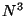
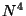

Next: 5. Top-level directives
Up: user
Previous: 3. NWChem Architecture
Contents
Subsections
NWChem provides many methods to compute the properties of molecular and
periodic systems using standard quantum mechanical descriptions of the
electronic wavefunction or density. In addition, NWChem has the
capability to perform classical molecular dynamics and free energy
simulations. These approaches may be combined to perform mixed
quantum-mechanics and molecular-mechanics simulations.
NWChem is available on almost all high performance computing platforms,
workstations, PCs running LINUX, as well as clusters of desktop platforms or
workgroup servers. NWChem development has been devoted to providing
maximum efficiency on massively parallel processors. It achieves this performance
on the 1960 processors HP Itanium2 system in the EMSL's MSCF.
It has not been optimized for high performance on single processor desktop systems.
The following quantum mechanical methods are available to calculate
energies, analytic first derivatives and second derivatives with respect to atomic
coordinates.
- Self Consistent Field (SCF) or Hartree Fock (RHF, UHF).
- Gaussian Density Functional Theory (DFT), using many local,
non-local (gradient-corrected), and hybrid (local, non-local, and HF)
exchange-correlation potentials
(spin-restricted)
with formal  and  scaling.
The following methods are available to calculate energies and analytic
first derivatives with respect to atomic coordinates. Second derivatives
are computed by finite difference of the first derivatives.
- Self Consistent Field (SCF) or Hartree Fock (ROHF).
- Gaussian Density Functional Theory (DFT), using many local,
non-local (gradient-corrected), and hybrid (local, non-local, and HF)
exchange-correlation potentials
(spin-unrestricted)
with formal and scaling.
- Spin-orbit DFT (SODFT), using many local and non-local (gradient-corrected)
exchange-correlation potentials (spin-unrestricted).
- MP2 including semi-direct using frozen core and RHF and UHF reference.
- Complete active space SCF (CASSCF).
The following methods are available to compute energies only. First
and second derivatives are computed by finite difference of the
energies.
- CCSD, CCSD(T), CCSD+T(CCSD), with RHF reference.
- Selected-CI with second-order perturbation correction.
- MP2 fully-direct with RHF reference.
- Resolution of the identity integral approximation MP2 (RI-MP2), with
RHF and UHF reference.
- CIS, TDHF, TDDFT, and Tamm-Dancoff TDDFT for excited states with RHF, UHF, RDFT, or UDFT reference.
- CCSD(T) and CCSD[T] for closed- and open-shell systems (TCE module)
- UCCD, ULCCD, UCCSD, ULCCSD, UQCISD, UCCSDT, and UCCSDTQ with RHF, UHF, or ROHF reference.
- UCISD, UCISDT, and UCISDTQ with RHF, UHF, or ROHF reference.
- Non-canonical UMP2, UMP3, and UMP4 with RHF or UHF reference.
- EOM-CCSD, EOM-CCSDT, EOM-CCSDTQ for excitation energies, transition
moments, and excited-state dipole moments of closed- and open-shell
systems
- CCSD, CCSDT, CCSDTQ for dipole moments of closed- and open-shell
systems
For all methods, the following operations may be performed:
- Single point energy
- Geometry optimization (minimization and transition state)
- Molecular dynamics on the fully ab initio potential energy
surface
- Numerical first and second derivatives automatically computed if
analytic derivatives are not available
- Normal mode vibrational analysis in cartesian coordinates
- ONIOM hybrid method of Morokuma and co-workers
- Generation of the electron density file for graphical display
- Evaluation of static, one-electron properties.
- Electrostatic potential fit of atomic partial charges (CHELPG method with
optional RESP restraints or charge constraints)
For closed and open shell SCF and DFT:
- COSMO energies - the continuum solvation `COnductor-like Screening MOdel'
of A. Klamt and G. Schüürmann to describe dielectric screening effects in
solvents.
In addition, automatic interfaces are provided to
- The natural bond orbital (NBO) package
- Python
The following methods for including relativity in quantum chemistry
calculations are available:
- The spin-free one-electron Douglas-Kroll approximation is available for all
quantum mechanical methods and their gradients.
- Dyall's spin-free Modified Dirac Hamiltonian approximation is available
for the Hartree-Fock method and its gradients.
- One-electron spin-orbit effects can be included via spin-orbit potentials.
This option is available for DFT and its gradients, but has to be run without
symmetry.
Two modules are available to compute the energy, optimize the
geometry, numerical second derivatives, and perform ab initio
molecular dynamics using pseudopotential plane-wave DFT.
- PSPW - (Pseudopotential plane-wave) A gamma point code for calculating
molecules, liquids, crystals, and surfaces.
- Band - A prototype band structure code for calculating crystals and
surfaces with small band gaps (e.g. semi-conductors and metals)
With
- Conjugate gradient and limited memory BFGS minimization
- Car-Parrinello (extended Lagrangian dynamics)
- Constant energy and constant temperature Car-Parrinello simulations
- Fixed atoms in cartesian and SHAKE constraints in Car-Parrinello
- Pseudopotential libraries
- Hamann and Troullier-Martins norm-conserving pseudopotentials with
optional semicore corrections
- Automated wavefunction initial guess, now with LCAO
- Vosko and PBE96 exchange-correlation potentials (spin-restricted
and unrestricted)
- Orthorhombic simulation cells with periodic and
free space boundary conditions.
- Modules to convert between small and large plane-wave expansions
- Interface to DRIVER, STEPPER, and VIB modules
- Polarization through the use of point charges
- Mulliken, point charge, DPLOT (wavefunction, density and electrostatic
potential plotting) analysis
The following functionality is available for classical molecular
simulations:
- Single configuration energy evaluation
- Energy minimization
- Molecular dynamics simulation
- Free energy simulation (multistep thermodynamic perturbation (MSTP) or
multiconfiguration thermodynamic integration (MCTI) methods with
options of single and/or dual topologies, double wide sampling, and
separation-shifted scaling)
The classical force field includes:
- Effective pair potentials (functional form used in AMBER, GROMOS,
CHARMM, etc.)
- First order polarization
- Self consistent polarization
- Smooth particle mesh Ewald (SPME)
- Twin range energy and force evaluation
- Periodic boundary conditions
- SHAKE constraints
- Consistent temperature and/or pressure ensembles
NWChem also has the capability to combine classical and quantum
descriptions in order to perform:
- Mixed quantum-mechanics and molecular-mechanics (QM/MM)
minimizations and molecular dynamics simulation , and
- Quantum molecular dynamics simulation by using any of the quantum
mechanical methods capable of returning gradients.
By using the DIRDYVTST module of NWChem, the user can write an input
file to the POLYRATE program, which can be used to calculate rate
constants including quantum mechanical vibrational energies and tunneling
contributions.
The Python programming language has been embedded within NWChem and
many of the high level capabilities of NWChem can be easily combined
and controlled by the user to perform complex operations.
- Global arrays (GA)
- Agregate Remote Memory Copy Interface (ARMCI)
- Linear Algebra (PeIGS) and FFT
- ParIO
- Memory allocation (MA)
Next: 5. Top-level directives
Up: user
Previous: 3. NWChem Architecture
Contents
Edoardo Apra
2004-05-25